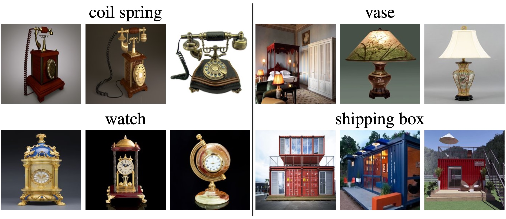

DASH: Detection and Assessment of Systematic Hallucinations of VLMs
Abstract
Vision-language models (VLMs) are prone to object hallucinations, where they erroneously indicate the presence of certain objects in an image. Existing benchmarks quantify hallucinations using relatively small, labeled datasets. However, this approach is i) insufficient to assess hallucinations that arise in open-world settings, where VLMs are widely used, and ii) inadequate for detecting systematic errors in VLMs. We propose DASH (Detection and Assessment of Systematic Hallucinations), an automatic, large-scale pipeline designed to identify systematic hallucinations of VLMs on real-world images in an open-world setting. A key component is DASH-OPT for image-based retrieval, where we optimize over the "natural image manifold" to generate images that mislead the VLM. The output of DASH consists of clusters of real and semantically similar images for which the VLM hallucinates an object. We apply DASH to PaliGemma-3B and two LLaVA-NeXT models across 380 object classes and, in total, find more than 19k clusters with 950k images. We study the transfer of the identified systematic hallucinations to other VLMs and show that fine-tuning PaliGemma-3B with the model-specific images obtained with DASH mitigates object hallucinations.
DASH Pipeline
We provide code for the pipeline and URLs for the resulting images.
Code and Image URLs
DASH-B: Object Hallucination Benchmark for Vision Language Models
The benchmark consists of 2682 images for a range of 70 different objects. The used query is "Can you see a object in this image. Please answer only with yes or no." 1341 of the images do not contain the corresponding object but trigger object hallucinations. They were retrieved using the DASH pipeline. The remaining 1341 images contain the objects.
Benchmark Code and Data
Examples
Examples of benchmark images that do not contain the object but trigger object hallucinations for gpt-4o-mini-2024-07-18 (best in the leaderboard).
Leaderboard
| Pos. | Model | ACC | TNR | TPR |
|---|---|---|---|---|
| 1 | gpt-4o-mini-2024-07-18 | 86.3% | 77.0% | 95.7% |
| 2 | InternVL2.5-26B | 77.5% | 57.3% | 97.8% |
| 3 | InternVL2.5-38B | 76.2% | 54.8% | 97.6% |
| 4 | InternVL2.5-26B-MPO | 76.1% | 54.8% | 97.4% |
| 5 | LLaVA-Onevision-05b | 75.1% | 60.2% | 90.1% |
| 6 | InternVL2.5-78B | 74.1% | 50.3% | 97.8% |
| 7 | InternVL2.5-8B | 71.7% | 47.2% | 96.2% |
| 8 | Ovis2-8B | 71.4% | 44.8% | 98.0% |
| 9 | PaliGemma2-10B | 69.8% | 48.0% | 91.6% |
| 10 | InternVL2.5-8B-MPO | 69.4% | 42.3% | 96.4% |
| 11 | PaliGemma2-3B | 68.9% | 40.9% | 96.8% |
| 12 | LLaVa-1.6-Llama | 65.2% | 37.0% | 93.4% |
| 13 | Ovis2-4B | 64.8% | 31.0% | 98.6% |
| 14 | Ovis2-1B | 64.6% | 35.1% | 94.0% |
| 15 | PaliGemma-3B | 62.0% | 26.4% | 97.7% |
| 16 | LLaVa-1.6-Mistral | 61.7% | 30.1% | 93.4% |
| 17 | Ovis2-2B | 61.7% | 27.3% | 96.1% |
| 18 | LLaVa-1.6-Vicuna | 53.7% | 10.4% | 96.9% |
Citation
If you use DASH in your research, please cite our paper:
@article{augustin2025dash,
title={DASH: Detection and Assessment of Systematic Hallucinations of VLMs},
author={Augustin, Maximilian and Neuhaus, Yannic and Hein, Matthias},
journal={arXiv preprint arXiv:2503.23573},
year={2025}
}